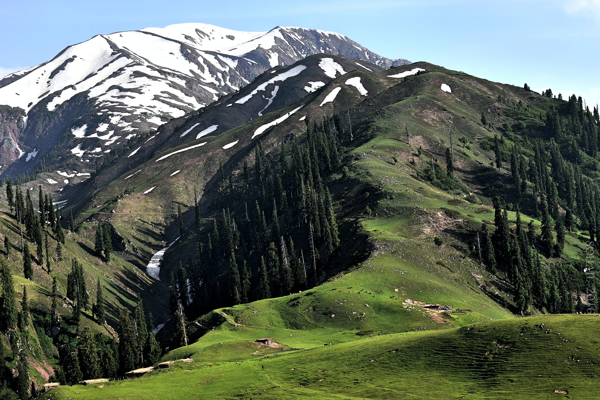

Shogran (Hindko, Urdu: شوگراں) is a hill station situated on a plateau in the Kaghan Valley of Mansehra District, Khyber Pakhtunkhwa in northern Pakistan at a height of 2,362 metres (7,749 ft) above sea level. It has been a popular tourist attraction in recent years. Shogran is located 34 kilometres (21 mi) away from Balakot. The road from Islamabad to the region is paved and measures 212 kilometres (132 mi). It is mainly populated during the summer.
1:Shogran Top
2:Siri Paye Meadows
3:Makra Peak
4:Paye Lake
1:Pine Park Hotel & Resort
2:The white Castle Resort
3:ORO Shogran
4:cordillera Resort
Shogran is opened for visitors in summers and winters.From June to August, it is the peak season during which the weather remains temperate. Temperature ranges between a maximum of 20 °C (68 °F) and a minimum of 3 °C (37 °F). Monsoon winds bring heavy rains with occasional hailstorms. Unexpected thunderstorms and heavy rains sometimes create difficulties for visitors to move around. At times the road to Shogran is blocked by landslides usually following rains or when the snow starts melting at the advent of the summer. During the winter months, the valley is usually covered in snow.
